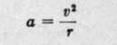
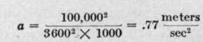
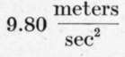
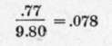

Pendular Camera Supports
Description
This section is from the book "Airplane Photography", by Herbert E. Ives. Also available from Amazon: Airplane photography.
Pendular Camera Supports
The design of the camera support may be approached from a different standpoint, namely, with the aim of carrying the camera so that it will tend to hang always vertical. In mapping this is of fundamental importance. It is, indeed, a question whether aerial mapping will ever be worthy of ranking as a precision method unless the camera can be mounted so that its pictures are taken in the horizontal, undistorted position.
The simplest way to hold the camera vertical is to mount it on gimbals, with its center of gravity below the point of support. When so mounted the camera swings as a pendulum. Delicacy of response to variation of level is obtained by leaving a considerable distance between the center of gravity and the center of support. Oscillation about the vertical position is to be prevented by some system of dash pots or other damping. A suspension of this kind is furnished with the Brock film camera (Fig. 60).
It will be seen at once that the relation of center of gravity to center of support called for here is in direct contradiction to the requirements for eliminating vibration. Either one requirement or the other must be sacrificed, or else a compromise made in which neither delicate response to inclination of the plane nor fully satisfactory freedom from vibration is attained. This is a very serious objection to the pendular support. But the really vital objection to the pendular support is that it performs its function only very partially. It is entirely satisfactory only under conditions of steady flying, as in a uniform climb or glide, with the plane tail or nose heavy, or in flying with one wing down. As soon as we introduce any acceleration, as in making a turn, the camera follows the plane and not the earth.
It is true that mapping photography is done from a plane flying as level as possible, and that except under bad air conditions it holds its course with very little turning, if handled by a skilled pilot. Nevertheless, a surprisingly small deviation from straight flying causes quite serious variations from the vertical. It is of interest to calculate how large may be the horizontal accelerations that accompany swervings from a straight course which one might think insignificant. For instance, consider the horizontal acceleration due to a turn having a radius of a kilometer when the plane is moving at 100 kilometers per hour. If a is the acceleration, v the velocity of the plane, and r the radius, we have from elementary dynamics that:
Substituting the values chosen, we have:
The acceleration of gravity being  we have that the ratio of the horizontal acceleration to the vertical is:
This is the tangent of the angle of deviation from the vertical, from which the angle turns out to be about 4^ degrees, a very considerable error, rapidly multiplied as the speed of the plane is increased. It is, indeed, open to question whether the average deviations from the vertical are not apt to be less with the camera rigidly fixed to the plane, if guided by a skilled pilot who will hold the ship level at the expense of "skidding" the slight turns he] must make to hold his direction.
Continue to:
Tags
camera, lens, airplane, aerial, film, exposure, photography, maps, birdseye